Parcours « cas-limites » étape 1 (goto) : HTTP 404 : GET http://localhost:3100/_vercel/speed-insights/script.js ; console.error : Failed to load resource: the server responded with a status of 404 (Not Found) ; console.error : Refused to execute script from 'http://localhost:3100/_vercel/speed-insights/script.js' because its MIME type ('text/plain') is not executable, and strict MIME type checking is enabled. ; requête échouée : GET http://localhost:3100/_vercel/speed-insights/script.js (net::ERR_ABORTED) ; requête échouée : GET http://localhost:3100/notes?_rsc=15e7mRwwwrE2r08K (net::ERR_ABORTED)
Parcours « cas-limites » étape 8 (wait) : requête échouée : GET http://localhost:3100/notes?_rsc=15e7mRwwwrE2r08K (net::ERR_ABORTED) ; requête échouée : POST http://localhost:3100/agenda (net::ERR_ABORTED) ; requête échouée : POST http://localhost:3100/agenda (net::ERR_ABORTED)
Parcours « creer-evenement » étape 1 (goto) : HTTP 404 : GET http://localhost:3100/_vercel/speed-insights/script.js ; console.error : Failed to load resource: the server responded with a status of 404 (Not Found) ; console.error : Refused to execute script from 'http://localhost:3100/_vercel/speed-insights/script.js' because its MIME type ('text/plain') is not executable, and strict MIME type checking is enabled. ; requête échouée : GET http://localhost:3100/_vercel/speed-insights/script.js (net::ERR_ABORTED) ; requête échouée : GET http://localhost:3100/notes?_rsc=15e7mRwwwrE2r08K (net::ERR_ABORTED)
Parcours « creer-evenement » étape 9 (reload) : requête échouée : POST http://localhost:3100/agenda (net::ERR_ABORTED) ; HTTP 404 : GET http://localhost:3100/_vercel/speed-insights/script.js ; console.error : Failed to load resource: the server responded with a status of 404 (Not Found) ; console.error : Refused to execute script from 'http://localhost:3100/_vercel/speed-insights/script.js' because its MIME type ('text/html') is not executable, and strict MIME type checking is enabled. ; requête échouée : GET http://localhost:3100/_vercel/speed-insights/script.js (net::ERR_ABORTED) ; requête échouée : GET http://localhost:3100/notes?_rsc=15e7mRwwwrE2r08K (net::ERR_ABORTED)
Parcours « creer-tache-sombre » étape 1 (goto) : HTTP 404 : GET http://localhost:3100/_vercel/speed-insights/script.js ; console.error : Failed to load resource: the server responded with a status of 404 (Not Found) ; console.error : Refused to execute script from 'http://localhost:3100/_vercel/speed-insights/script.js' because its MIME type ('text/plain') is not executable, and strict MIME type checking is enabled. ; requête échouée : GET http://localhost:3100/_vercel/speed-insights/script.js (net::ERR_ABORTED) ; requête échouée : GET http://localhost:3100/notes?_rsc=15e7mRwwwrE2r08K (net::ERR_ABORTED) ; requête échouée : POST http://localhost:3100/agenda (net::ERR_ABORTED)
Parcours « creer-tache-sombre » étape 8 (wait) : requête échouée : GET http://localhost:3100/notes?_rsc=gFW0MxFV8ywPcvsL (net::ERR_ABORTED) ; requête échouée : POST http://localhost:3100/agenda (net::ERR_ABORTED) ; requête échouée : POST http://localhost:3100/agenda (net::ERR_ABORTED)
Parcours « creer-tache-sombre » étape 9 (reload) : HTTP 404 : GET http://localhost:3100/_vercel/speed-insights/script.js ; console.error : Failed to load resource: the server responded with a status of 404 (Not Found) ; console.error : Refused to execute script from 'http://localhost:3100/_vercel/speed-insights/script.js' because its MIME type ('text/html') is not executable, and strict MIME type checking is enabled. ; requête échouée : GET http://localhost:3100/_vercel/speed-insights/script.js (net::ERR_ABORTED) ; requête échouée : GET http://localhost:3100/notes?_rsc=15e7mRwwwrE2r08K (net::ERR_ABORTED) ; requête échouée : POST http://localhost:3100/agenda (net::ERR_ABORTED)
Parcours « modifier-supprimer-evenement » étape 1 (goto) : HTTP 404 : GET http://localhost:3100/_vercel/speed-insights/script.js ; console.error : Failed to load resource: the server responded with a status of 404 (Not Found) ; console.error : Refused to execute script from 'http://localhost:3100/_vercel/speed-insights/script.js' because its MIME type ('text/plain') is not executable, and strict MIME type checking is enabled. ; requête échouée : GET http://localhost:3100/_vercel/speed-insights/script.js (net::ERR_ABORTED) ; requête échouée : GET http://localhost:3100/notes?_rsc=15e7mRwwwrE2r08K (net::ERR_ABORTED) ; requête échouée : POST http://localhost:3100/agenda (net::ERR_ABORTED)
Parcours « navigation-vues » étape 1 (goto) : HTTP 404 : GET http://localhost:3100/_vercel/speed-insights/script.js ; console.error : Failed to load resource: the server responded with a status of 404 (Not Found) ; console.error : Refused to execute script from 'http://localhost:3100/_vercel/speed-insights/script.js' because its MIME type ('text/plain') is not executable, and strict MIME type checking is enabled. ; requête échouée : GET http://localhost:3100/_vercel/speed-insights/script.js (net::ERR_ABORTED) ; requête échouée : GET http://localhost:3100/notes?_rsc=15e7mRwwwrE2r08K (net::ERR_ABORTED)
Écrans au repos (1)
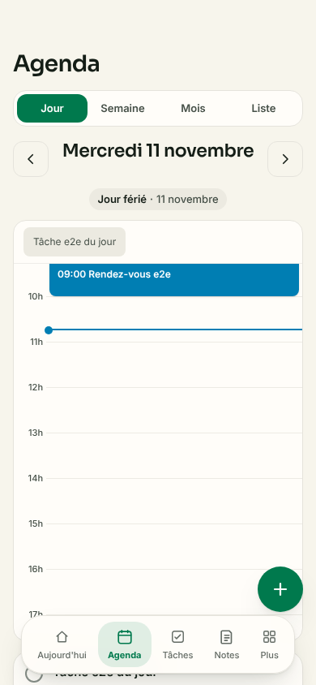
/agenda · clair · HTTP 200
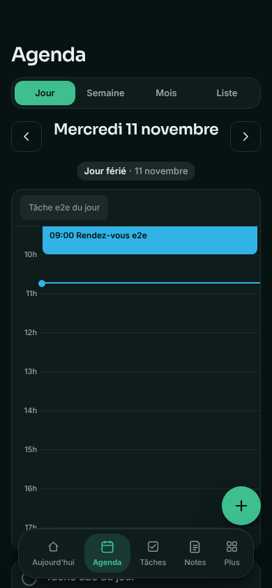
/agenda · sombre · HTTP 200
Usage réel (5 parcours)
cas-limites
1. goto ouvrir — anomalie ⚠ HTTP 404 : GET http://localhost:3100/_vercel/speed-insights/script.js ⚠ console.error : Failed to load resource: the server responded with a status of 404 (Not Found) ⚠ console.error : Refused to execute script from 'http://localhost:3100/_vercel/speed-insights/script.js' because its MIME type ('text/plain') is not executable, and strict MIME type checking is enabled. ⚠ requête échouée : GET http://localhost:3100/_vercel/speed-insights/script.js (net::ERR_ABORTED) ⚠ requête échouée : GET http://localhost:3100/notes?_rsc=15e7mRwwwrE2r08K (net::ERR_ABORTED)2. click ouvrir le + — ok
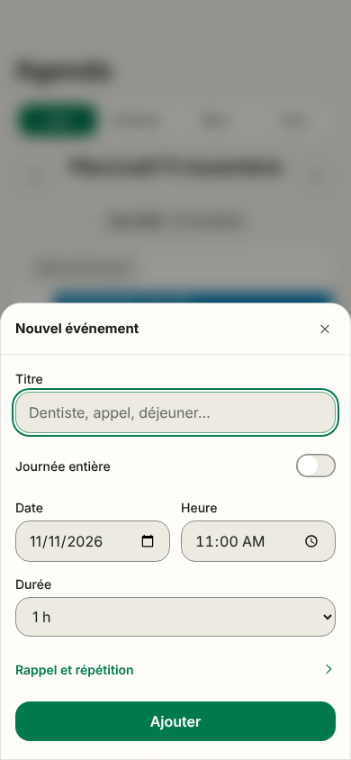
3. click nouvel événement — ok4. click titre vide — ok
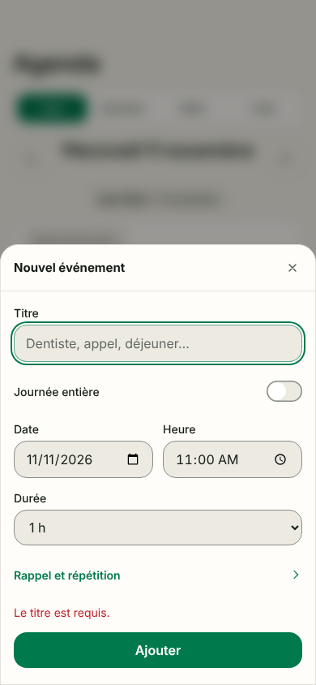
5. screenshot message d'erreur titre vide ? — ok
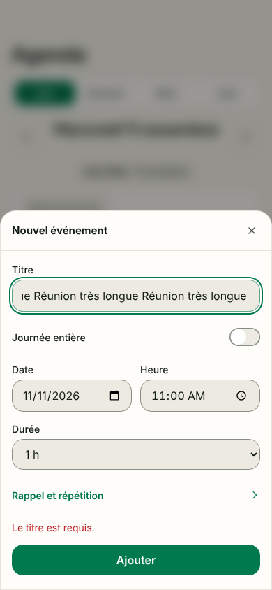
6. fill titre très long — ok
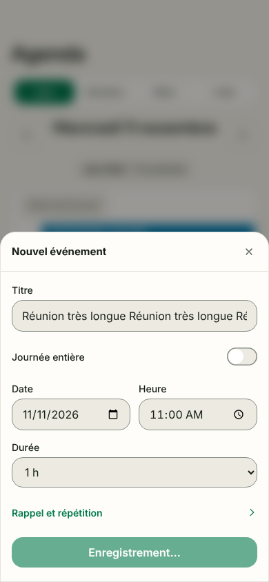
7. dblclick double clic sur Ajouter — ok8. wait attendre — anomalie ⚠ requête échouée : GET http://localhost:3100/notes?_rsc=15e7mRwwwrE2r08K (net::ERR_ABORTED) ⚠ requête échouée : POST http://localhost:3100/agenda (net::ERR_ABORTED) ⚠ requête échouée : POST http://localhost:3100/agenda (net::ERR_ABORTED)
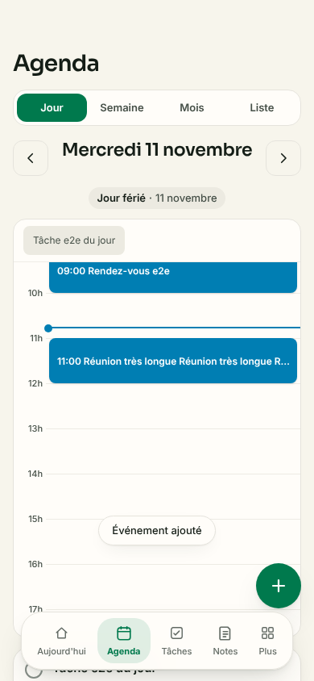
9. screenshot débordement du titre long, doublon ? — ok
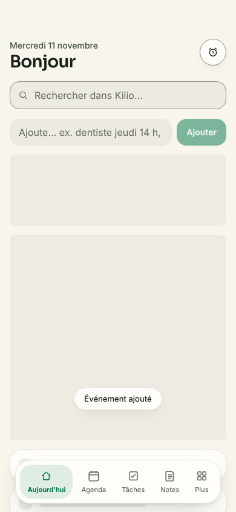
10. back retour arrière — ok
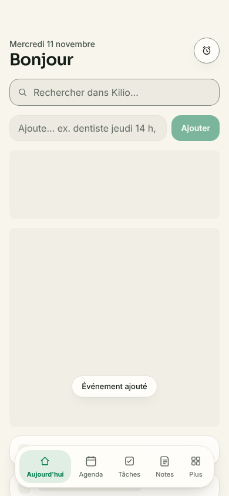
11. screenshot état après retour — ok
creer-evenement
1. goto ouvrir l'agenda — anomalie ⚠ HTTP 404 : GET http://localhost:3100/_vercel/speed-insights/script.js ⚠ console.error : Failed to load resource: the server responded with a status of 404 (Not Found) ⚠ console.error : Refused to execute script from 'http://localhost:3100/_vercel/speed-insights/script.js' because its MIME type ('text/plain') is not executable, and strict MIME type checking is enabled. ⚠ requête échouée : GET http://localhost:3100/_vercel/speed-insights/script.js (net::ERR_ABORTED) ⚠ requête échouée : GET http://localhost:3100/notes?_rsc=15e7mRwwwrE2r08K (net::ERR_ABORTED)
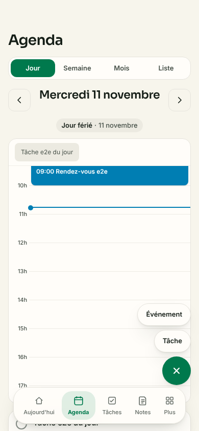
2. click ouvrir le + — ok
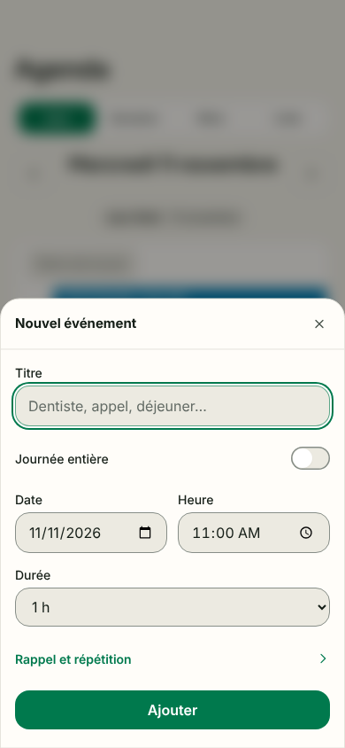
3. click choisir Événement — ok
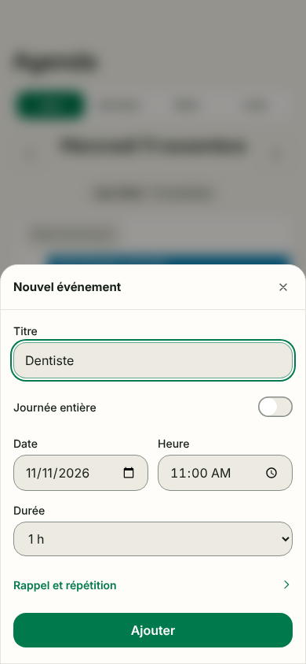
4. fill titre — ok
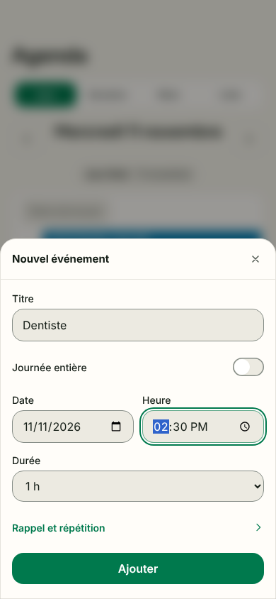
5. fill heure 14:30 — ok
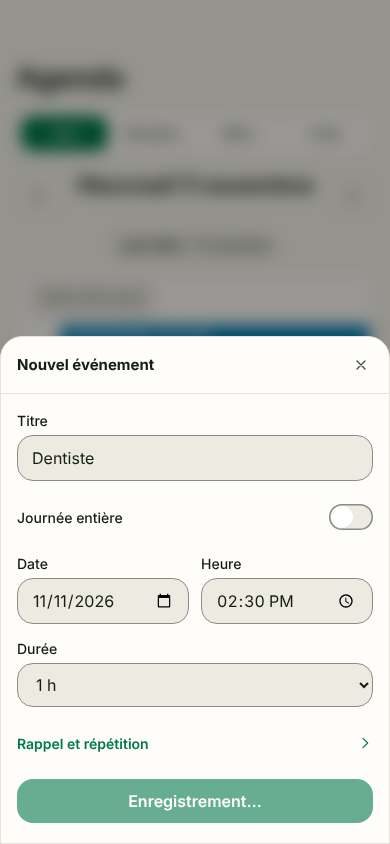
6. click valider — ok
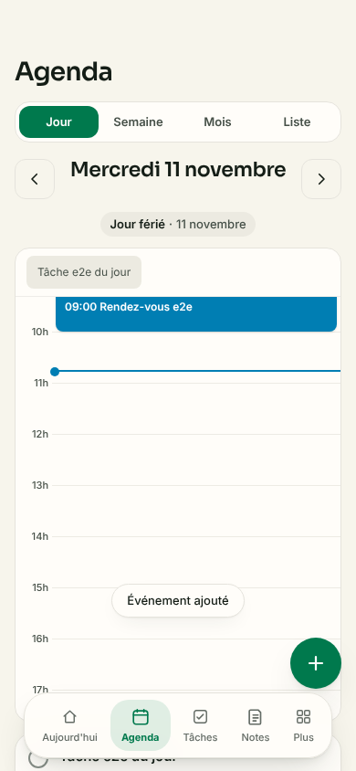
7. expect_text toast de confirmation — ok
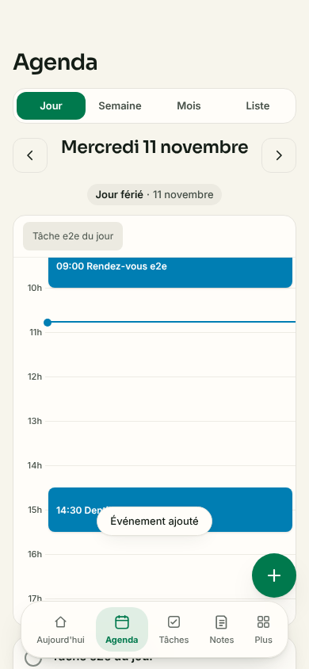
8. expect_text visible dans la grille — ok
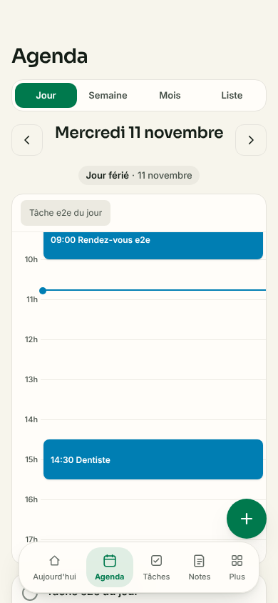
9. reload persistance — anomalie ⚠ requête échouée : POST http://localhost:3100/agenda (net::ERR_ABORTED) ⚠ HTTP 404 : GET http://localhost:3100/_vercel/speed-insights/script.js ⚠ console.error : Failed to load resource: the server responded with a status of 404 (Not Found) ⚠ console.error : Refused to execute script from 'http://localhost:3100/_vercel/speed-insights/script.js' because its MIME type ('text/html') is not executable, and strict MIME type checking is enabled. ⚠ requête échouée : GET http://localhost:3100/_vercel/speed-insights/script.js (net::ERR_ABORTED) ⚠ requête échouée : GET http://localhost:3100/notes?_rsc=15e7mRwwwrE2r08K (net::ERR_ABORTED)10. expect_text toujours là après rechargement — ok
creer-tache-sombre
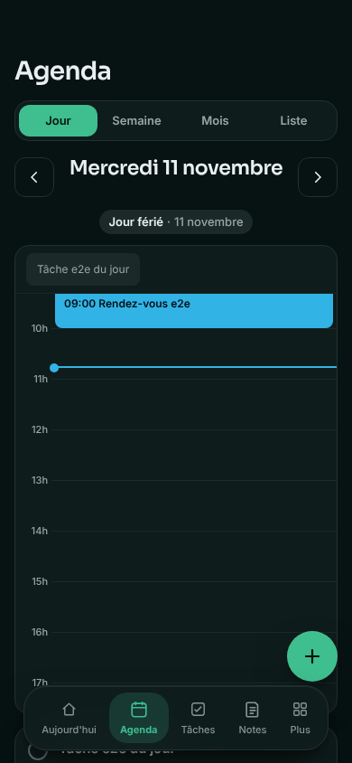
1. goto ouvrir en sombre — anomalie ⚠ HTTP 404 : GET http://localhost:3100/_vercel/speed-insights/script.js ⚠ console.error : Failed to load resource: the server responded with a status of 404 (Not Found) ⚠ console.error : Refused to execute script from 'http://localhost:3100/_vercel/speed-insights/script.js' because its MIME type ('text/plain') is not executable, and strict MIME type checking is enabled. ⚠ requête échouée : GET http://localhost:3100/_vercel/speed-insights/script.js (net::ERR_ABORTED) ⚠ requête échouée : GET http://localhost:3100/notes?_rsc=15e7mRwwwrE2r08K (net::ERR_ABORTED) ⚠ requête échouée : POST http://localhost:3100/agenda (net::ERR_ABORTED)
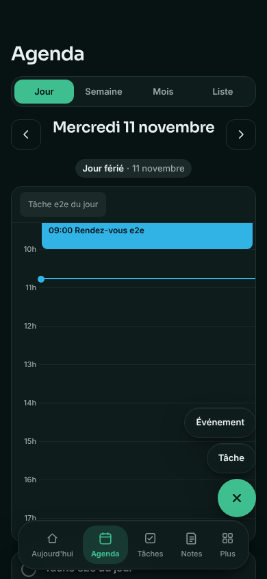
2. click ouvrir le + — ok
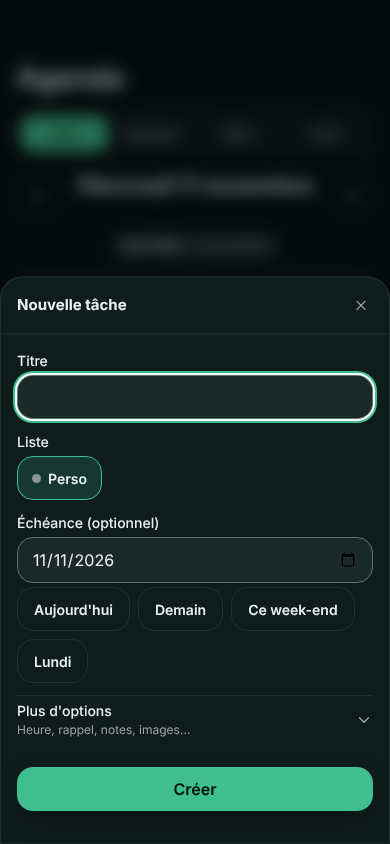
3. click choisir Tâche — ok4. screenshot formulaire tâche en sombre — ok
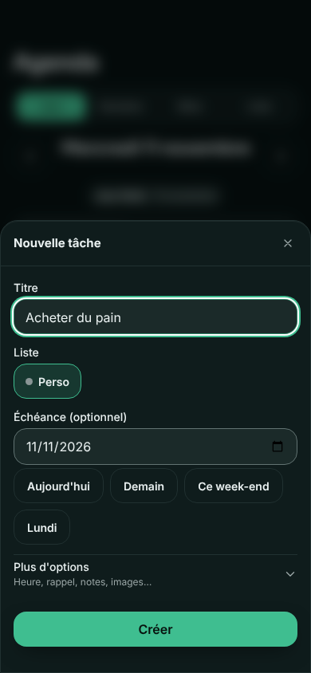
5. fill titre — ok6. click créer — ok
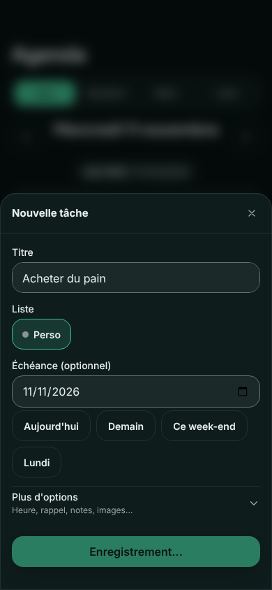
7. expect_text visible dans l'agenda — ok8. wait laisser finir l'enregistrement — anomalie ⚠ requête échouée : GET http://localhost:3100/notes?_rsc=gFW0MxFV8ywPcvsL (net::ERR_ABORTED) ⚠ requête échouée : POST http://localhost:3100/agenda (net::ERR_ABORTED) ⚠ requête échouée : POST http://localhost:3100/agenda (net::ERR_ABORTED)9. reload persistance — anomalie ⚠ HTTP 404 : GET http://localhost:3100/_vercel/speed-insights/script.js ⚠ console.error : Failed to load resource: the server responded with a status of 404 (Not Found) ⚠ console.error : Refused to execute script from 'http://localhost:3100/_vercel/speed-insights/script.js' because its MIME type ('text/html') is not executable, and strict MIME type checking is enabled. ⚠ requête échouée : GET http://localhost:3100/_vercel/speed-insights/script.js (net::ERR_ABORTED) ⚠ requête échouée : GET http://localhost:3100/notes?_rsc=15e7mRwwwrE2r08K (net::ERR_ABORTED) ⚠ requête échouée : POST http://localhost:3100/agenda (net::ERR_ABORTED)10. expect_text après rechargement — ok
modifier-supprimer-evenement
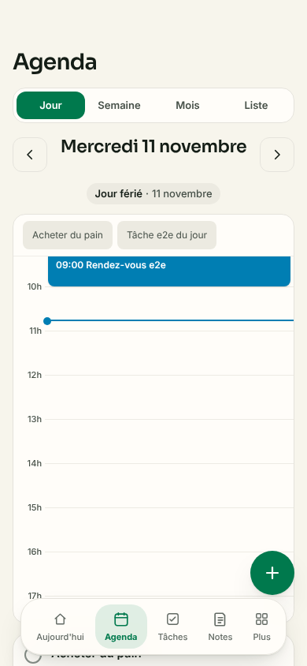
1. goto ouvrir — anomalie ⚠ HTTP 404 : GET http://localhost:3100/_vercel/speed-insights/script.js ⚠ console.error : Failed to load resource: the server responded with a status of 404 (Not Found) ⚠ console.error : Refused to execute script from 'http://localhost:3100/_vercel/speed-insights/script.js' because its MIME type ('text/plain') is not executable, and strict MIME type checking is enabled. ⚠ requête échouée : GET http://localhost:3100/_vercel/speed-insights/script.js (net::ERR_ABORTED) ⚠ requête échouée : GET http://localhost:3100/notes?_rsc=15e7mRwwwrE2r08K (net::ERR_ABORTED) ⚠ requête échouée : POST http://localhost:3100/agenda (net::ERR_ABORTED)2. click ouvrir l'événement existant — ok
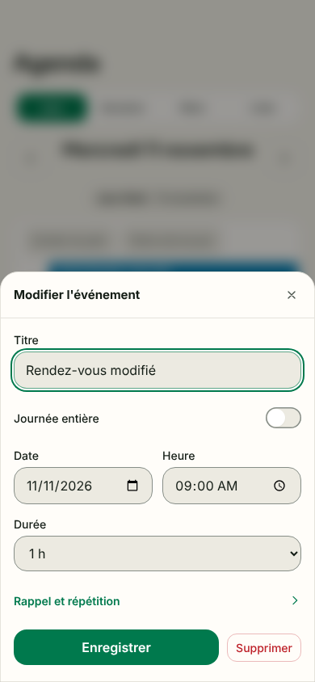
3. fill changer le titre — ok
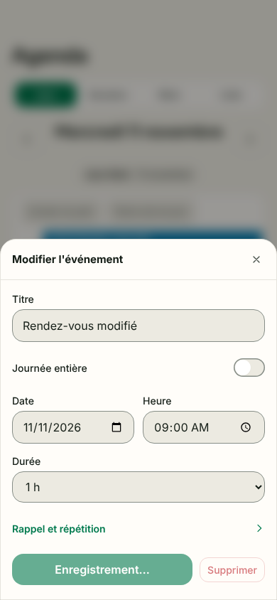
4. click enregistrer — ok
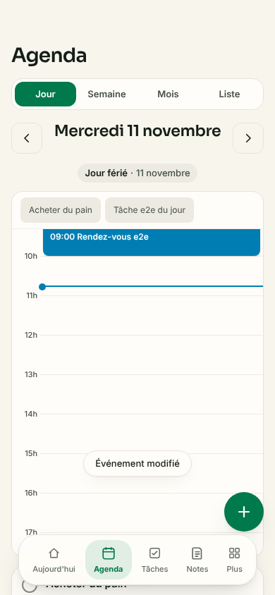
5. expect_text toast — ok
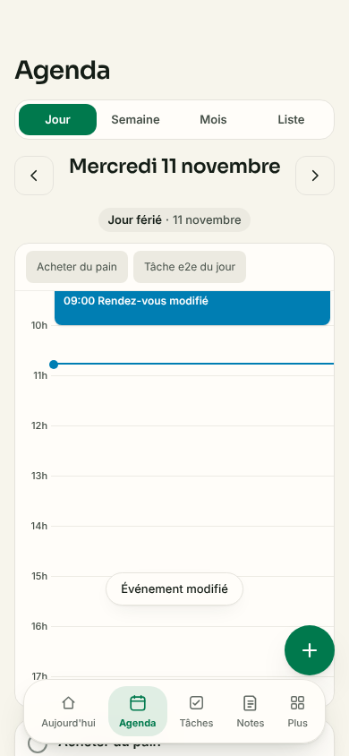
6. expect_text titre à jour — ok
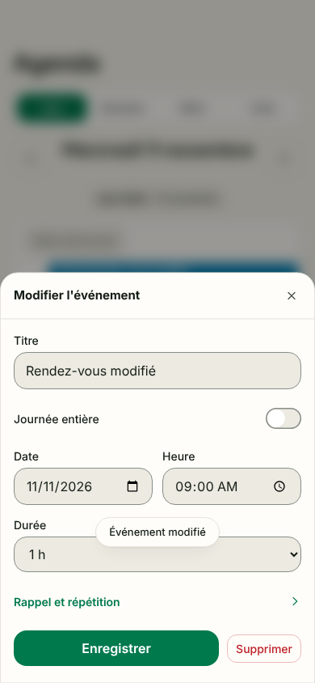
7. click rouvrir — ok
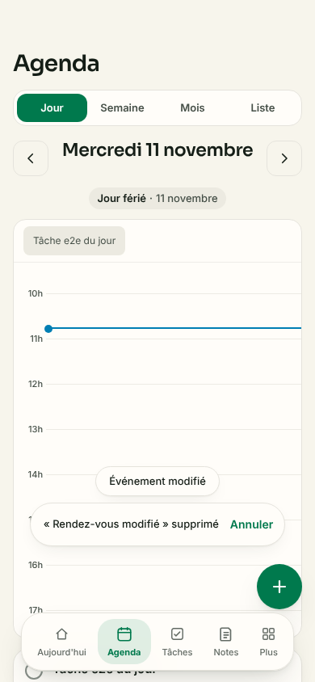
8. click supprimer — ok9. expect_text toast Annuler — ok10. expect_absent masqué tout de suite — ok
navigation-vues
1. goto jour — anomalie ⚠ HTTP 404 : GET http://localhost:3100/_vercel/speed-insights/script.js ⚠ console.error : Failed to load resource: the server responded with a status of 404 (Not Found) ⚠ console.error : Refused to execute script from 'http://localhost:3100/_vercel/speed-insights/script.js' because its MIME type ('text/plain') is not executable, and strict MIME type checking is enabled. ⚠ requête échouée : GET http://localhost:3100/_vercel/speed-insights/script.js (net::ERR_ABORTED) ⚠ requête échouée : GET http://localhost:3100/notes?_rsc=15e7mRwwwrE2r08K (net::ERR_ABORTED)2. click jour suivant — ok
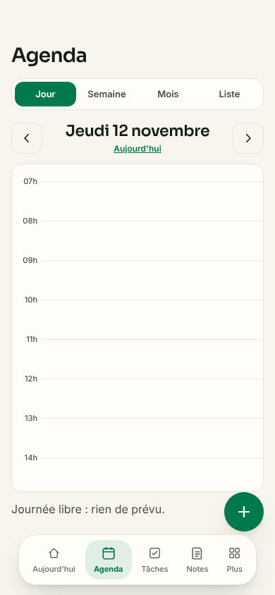
3. expect_text bouton retour à aujourd'hui — ok4. click revenir — ok